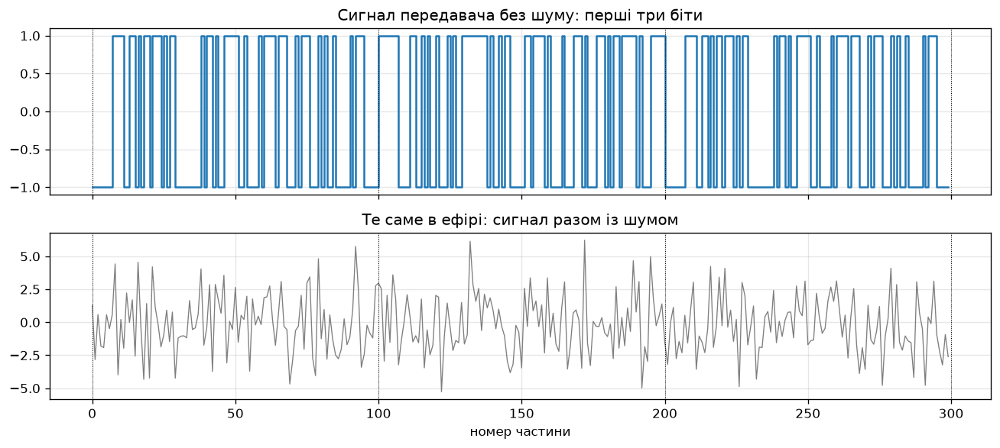

Тема 7. Радіоелектронна сумісність. Захист від ворожої РЕР
Тут зібрано все для практичної частини теми: вправа, відповіді до якої можна перевірити просто на цій сторінці, демонстрація до завдання 1, статті до завдання 2, інструкція до завдання 3, Jupyter Notebook до завдання 4, посилання на поради військовим і цивільним, на публікації, названі в темі, і відповіді.
Вправа № 1. Що видало підрозділ?
У таблиці зібрано шість знахідок про підрозділ умовного противника з попередніх тем. Їх зробили три пости навчального району: П1, П2 і П3. Працюйте в малих групах.
| Знахідка | Що помітила розвідка |
|---|---|
| 1 | Біля командного пункту цілий день є сплески на частоті 900 МГц. |
| 2 | Радіостанцію з номером 262 чули всі три пости. На неї припадає більшість передач мережі: 12 із 21. Одна тривала 95 с. |
| 3 | Удень мережа щогодини перевіряє зв’язок у перші 7 хвилин години. |
| 4 | Радар 1 працює цілу добу. Радар 2 вмикали на 8 хвилин. |
| 5 | Відео з безпілотника по 30 хвилин ішло без пауз на одній частоті. |
| 6 | Супутниковий термінал командного пункту не почув жоден пост. |
- Назвіть пристрій за кожною знахідкою. Якщо пристрій почули, назвіть звичку чи помилку, яка його видала.
- Який захід захистив би кожен із почутих пристроїв? Яку умову перехоплення він порушує?
- Яке джерело захищене найкраще? Що його захищає і що видає сам командний пункт?
- Складіть для цього підрозділу три правила роботи в ефірі на завтра. Що розвідка побачить і після них?
Перевірте себе
Оберіть відповіді й натисніть «Перевірити». Кнопка «Показати пояснення» відкриває відповіді до перших трьох кроків. Крок 4 готової відповіді не має.
Демонстрація до завдання 1
У підручнику завдання 1 записано так:
Потрібен комп’ютер або телефон з інтернетом. Демонстрація на сторінці теми показує стрибки частоти передавача і смугу приймача розвідки. Два повзунки змінюють кількість частот і ширину смуги. Яку частку стрибків ловить вузький приймач? За якої смуги він ловить усі?
Рисунок побудовано так само, як рис. 7.3, б підручника. Кожна клітинка показує один стрибок передавача: праворуч іде час, угору частота. Частоту кожного стрибка передавач обирає випадково. Сіре поле охоплює частоти передавача. Фіолетова смуга показує частоти, які чує приймач розвідки. Стрибки, що потрапили в смугу приймача, зафарбовано червоним.
Приймач розвідки спіймав 5 із 40 стрибків.
Статті до завдання 2
У підручнику завдання 2 записано так:
Працюйте в малих групах. У січні 2018 року на карті пробіжок, яку оприлюднив застосунок для спортсменів Strava, помітили обриси військових баз. Що видало бази? Хто і як міг цьому запобігти? Статті про випадок є на сторінці теми.
- Strava fitness tracking map reveals military bases, movements in war zones. Стаття агентства Associated Press на сайті NBC News, 29 січня 2018 р., англійською мовою. У ній сказано, що карту оприлюднили в листопаді 2017 р. і що вона показує маршрути, накопичені з 2015 р.
- Australian analyst discovers exercise app reveals details of US military sites. Стаття австралійського мовника SBS News, 29 січня 2018 р., англійською мовою: хто помітив бази на карті та що відповіла компанія.
Інструкція до завдання 3
У підручнику завдання 3 записано так:
Потрібен комп’ютер із редактором таблиць, наприклад Excel, Google Таблиці чи LibreOffice Calc. За рівнянням Фрііса з теми 2 обчисліть, з якої відстані приймач розвідки чує радіостанцію потужністю 5 Вт і 0,2 Вт. Покрокова інструкція є на сторінці теми.
Рівняння Фрііса з теми 2 каже, яку потужність P₂ приймає антена на відстані d від передавача потужністю P₁: P₂ = P₁ · (λ / (4πd))², де λ — довжина хвилі. Приймач розрізняє сигнал, поки P₂ не менша за певну потужність, яку називають порогом приймача. Із рівняння знаходять відстань, на якій сигнал слабшає до порога: d = λ / (4π) · √(P₁ / P₂).
Радіостанція працює на частоті 300 МГц. Поріг приймача розвідки дорівнює 10 пВт. Піковат (пВт) — це трильйонна частка вата.
- Відкрийте редактор таблиць і створіть порожню таблицю.
- У стовпець A впишіть назви, у стовпець B числа:
A B 1 Частота, МГц 300 2 Потужність передавача, Вт 5 3 Поріг приймача, пВт 10 - У клітинку A5 впишіть «Довжина хвилі, м», у клітинку A6 «Відстань, км». У клітинки B5 і B6 впишіть формули. Кожна формула починається зі знака «=».
Клітинка Формула Що вона обчислює B5 =300/B1 довжина хвилі в метрах за правилом теми 2: 300 ділять на частоту в мегагерцах B6 =B5/(4*PI())*SQRT(B2*10^12/B3)/1000 відстань у кілометрах, з якої приймач ще розрізняє сигнал. Множник 10^12 переводить піковати у вати, ділення на 1000 переводить метри в кілометри - Запишіть відстань із клітинки B6. Замініть потужність у клітинці B2 на 0,2 і запишіть нову відстань. У скільки разів зменшилася потужність? У скільки разів зменшилася відстань?
- Доберіть у клітинці B2 таку потужність, щоб приймач розвідки чув радіостанцію не далі ніж за 5 км.
Функція SQRT обчислює квадратний корінь, PI() дає число π, а знак ^ підносить до степеня. Десяткові числа вписуйте так, як заведено у вашому редакторі: з комою або з крапкою. Таблиця рахує відстань у вільному просторі, де хвилям ніщо не заважає. На місцевості радіогоризонт і перешкоди роблять її меншою.
Jupyter Notebook до завдання 4
У підручнику завдання 4 записано так:
Потрібен комп’ютер з інтернетом. Jupyter Notebook — це файл, у якому пояснення чергуються з короткими програмами мовою Python. Відкрийте файл зі сторінки теми в безкоштовному сервісі Google Colab, що працює у браузері. Програма ховає повідомлення під шумом і дістає його за кодом. Виконайте завдання в кінці файлу.
Щоб працювати в сервісі Google Colab, нічого встановлювати не треба. Потрібен лише обліковий запис Google.
- Клацніть посилання «Шумоподібний сигнал мовою Python»: браузер збереже Jupyter Notebook, файл
tema-7-jupyter-notebook.ipynb, в теці завантажень. - Відкрийте сайт сервісу colab.research.google.com і ввійдіть в обліковий запис Google.
- У меню «Файл» оберіть команду, яка відкриває Jupyter Notebook, збережений на комп’ютері. Якщо меню сервісу англійською, це меню File і команда Upload notebook. Укажіть збережений файл: він відкриється, і першим у ньому буде заголовок «Тема 7. Шумоподібний сигнал мовою Python».
- Jupyter Notebook складається з частин, які називають комірками: в одних комірках текст, в інших програма. Перша комірка з програмою починається словами «# Повідомлення і код». Клацніть цю комірку й натисніть Shift+Enter: комірка виконається, а під нею з’явиться результат.
- Так само, згори донизу, виконуйте решту комірок із програмою, а комірки з текстом читайте. Під другою програмою з’явиться рисунок, як нижче.

Далі працюйте за текстом самого файлу: він закінчується завданнями.
Поради військовим і цивільним
- Держспецзв’язку надає настанови щодо протидії загрозам у кіберпросторі, безпечного користування телефонами та інтернетом. Повідомлення на Урядовому порталі, 27 липня 2022 р.: поради військовим і цивільним, як безпечно користуватися телефоном.
- Військові показали список, що заборонено робити при ракетних та дронових атаках росіян. Новина видання LIGA.net, 17 травня 2023 р.: прохання Міністерства оборони України не публікувати фото й відео роботи протиповітряної оборони.
Відповіді
Відповіді до вправи, контрольних запитань і завдань теми. Спершу виконайте вправу самі.
Публікації, названі в темі
- Russia blames phones for the New Year’s Day strike. Стаття телеканалу Euronews з матеріалами агентства Associated Press, 4 січня 2023 р., англійською мовою: заява міністерства оборони росії про удар у Макіївці.
- Preliminary Lessons in Conventional Warfighting from Russia’s Invasion of Ukraine: February–July 2022. Звіт британського Королівського об’єднаного інституту оборонних досліджень (RUSI), 30 листопада 2022 р., англійською мовою. Серед його висновків: російські засоби радіоелектронної боротьби заважали й російським військам.
- Bluetooth Technology Overview. Сторінка організації Bluetooth SIG, яка розробляє стандарт Bluetooth, англійською мовою: 79 частот і стрибки частоти.
- US2292387A: Secret communication system. Патент США 1942 р. на спосіб зв’язку зі зміною частоти, англійською мовою. Геді Ламарр записана в ньому під прізвищем Markey.
- PLASTUN-RP3000. Сторінка мобільної пеленгаційної системи «Пластун» на сайті компанії «Інфозахист», українською мовою.
- APELLA. Сторінка поста радіорозвідки APELLA на сайті компанії «Інфозахист», українською мовою.